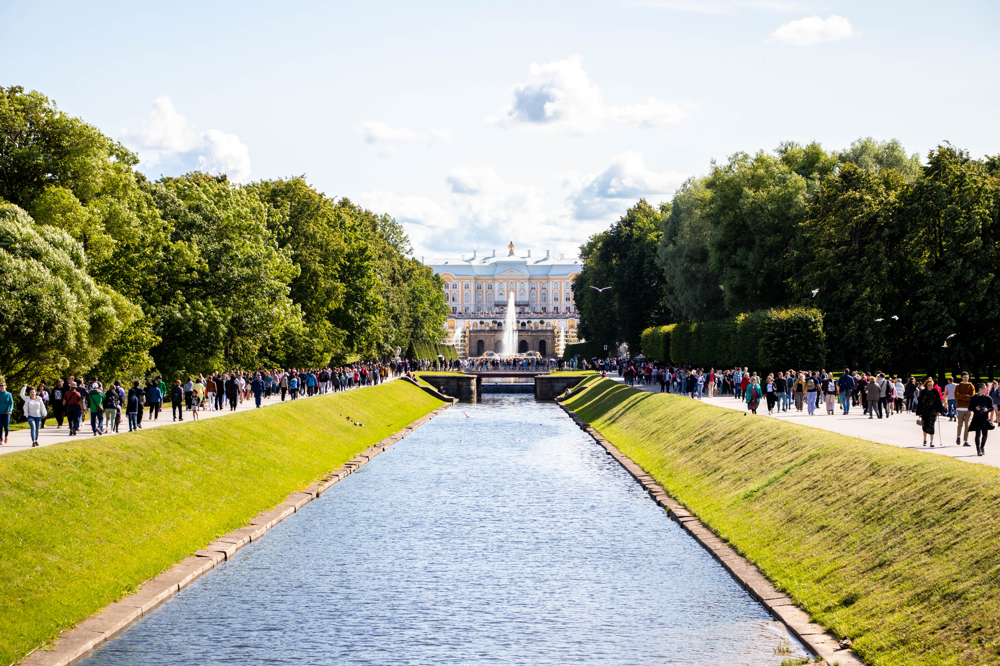
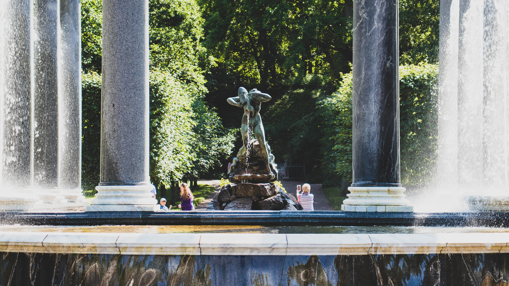
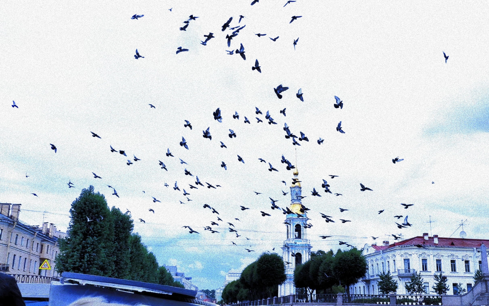

Bắt đầu như thế nào nhỉ? Có lẽ chuyến đi này không diễn ra thuận như kế hoạch, kế hoạch của tôi luôn bị ám ảnh bởi những thay đổi. Nhưng rồi tôi nhất quyết để bắt buộc kế hoạch của mình được diễn ra đúng như những gì đã định sẵn. Trước khi đi, đó là một chuỗi những chuyện chẳng vui với tôi, và chuyến đi này được xem như là kì nghỉ cho những mệt mỏi kéo dài có dịp giải thoát. Tôi sẵn sàng cho chuyến đi với một tinh thần thoải mái, một kì nghỉ thật sự cho bản thân. À, hè này bạn bè luôn hỏi tại sao tôi không về? Luôn luôn có những câu hỏi, hay có những sự mong chờ nhưng tôi chọn ở lại khám phá nước Nga và làm một vài việc khác cần cho bản thân. Thật sự thì tôi rất muốn trở về ngay và luôn, vì tôi nhớ mọi người quá rồi nhưng thời điểm thích hợp để tôi về có lẽ không phải bây giờ (tôi không biết lý do nữa). Chờ tôi nhé - sắp thôi! Quay lại với chuyến đi đó, mọi thứ đã sẵn sàng nhưng trước ngày đi, trên mạng thấy tin ở Saint mưa lớn liên tục và có chỗ cũng ngập lụt. Một cảm giác hơi lo lắng nhưng mua vé rồi, và có sao đi nữa tôi vẫn sẽ đi - cái cảm giác tôi sẽ cố bằng được để không có một lý do nào có thể ngăn kế hoạch của bản thân mình đổ vỡ. Trong đầu nghĩ, “Ngày xưa, HN giông bão thế, có cả tuyến đường ngập đi ,với sự điên cuồng ngày đó, tôi cùng maize vẫn lượn khắp con phố thì đến Saint có lụt cũng là trải nghiệm thú vị.” Trước khi đi vài tiếng thì phòng anh Tường có tổ chức ăn uống, thế là tôi cũng lên góp vui một chút, nhưng cũng chẳng dám uống nhiều vì vài tiếng nữa là đi rồi.
Đây cũng là lần đầu tiên tôi trải nghiệm việc đi tàu. Hồi ở VN đã từng muốn thử rồi nhưng rồi chẳng thử được lần nào đã sang bên này rồi. Cái cảm giác lạ lạ và thích thích dù hơi chật chội chút vì tôi nằm trên giường phía trên. Và cũng chẳng có gì để ngắm cả vì tôi đi giờ đêm để ngủ và sáng là đến nơi. Nhưng sự thật tôi cũng chẳng ngủ được như kế hoạch, vẫn thói quen thức khuya khó bỏ. Tôi đã cầm điện thoại lướt dạo Fb, nghe Spotify, hay thỉnh thoảng xem vài video Youtube. Ôi nhưng vì trên tàu không có wifi nên tôi phải sử dụng 4G, mà mỗi lần tàu đi đến nơi nào đó sóng yếu là thực sự chán - khả năng kết nối thế giới lúc đó luôn bị gián đoạn. Và rồi thời gian trôi đến gần sáng thì tôi đã ngủ được. Tôi ngủ mà chẳng biết gì cho đến lúc có cánh tay ai đó đánh thức tôi dậy trước giờ tàu dừng - đó là một cô nhân viên của tàu. Nói chung lần đầu đi tàu của tôi như một chỗ qua đêm để tiết kiệm thời gian chứ chẳng tìm hiểu thêm hay tận hưởng được cảm giác gì ngoài sự khác lạ.
Cuối cùng tôi cũng xuống đến Saint. Và tôi sẽ khám phá Saint cùng với anh Đức Anh. Thứ đầu tiên tôi nghĩ đến đó là, thời tiết đón chào tôi thật tuyệt, không mưa, nắng dịu và cảm giác mát mát của thành phố này. Tôi nhìn thấy đầu tiên là những kiến trúc đặc trưng của Saint - Thật thích thú. Khi về đến phòng thì cũng đã là trưa, nghỉ ngơi rồi hôm đó đi dạo một chút thành phố, đi ăn nhẹ và tận hưởng không khí là có lẽ giống như tôi chạy trốn khỏi cuộc sống hiện tại để tìm một không khí trong lành.
Tuyệt - một tâm trí trong lành!
Tôi đến Saint và du lịch không hề vội vã, không chạy theo những kế hoạch phải đi thật nhiều nơi dù tôi rất muốn đi thật nhiều, vì càng đi tôi càng muốn khám phá hết nơi đó. Nhưng ở Saint tôi làm những gì mà tôi chưa vào… Vào rạp xem phim, uống cà phê và nói chuyện phiến với 2 đứa bạn cũ, vào vài nơi mà ở Moscow tôi chưa vào trong năm vừa rồi. Ở Saint cảm nhận một cảm giác gì đó thật khó nói, nó giống nơi mà tôi yêu - Amsterdam (Không hiểu nữa). Hình ảnh những con kênh nước chảy giữa lòng thành phố có lẽ tôi thấy ấn tượng. Thật khó cho tôi mỗi lúc mô tả cảm giác của mình nhưng có một cảm giác thật khác thật lạ khi ở đó - thật thoải mái, thật relax.

Sự thật văn vẻ của tôi hơi ngu người nên viết đến đây tôi chẳng biết viết gì nữa. Nhìn chung chuyến chạy trốn của tôi thành công, thành công khi quyết làm bằng được dù trước đó giông tố giống hệt cái thời tiết Saint trước khi tôi đến, thành công khi tôi gác được đống hỗn độn của mình sang một bên, thành công vì thời tiết Saint ủng hộ, thành công vì có một kỉ niệm để viết bài blog này.

Nếu có cơ hội tôi sẽ trở lại Saint để đi những nơi tôi đã bỏ lỡ, quả thật ở Saint rất Thích, và có quá nhiều thứ để đi. Dù có xếp lịch đi mòn chân trong 7 ngày cũng chẳng đủ.

Thôi hết rồi, nhạt nhẽo thế thôi. Văn không có nhiều nhưng ảnh thì vô biên.